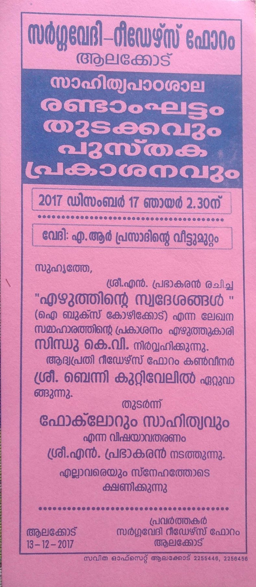
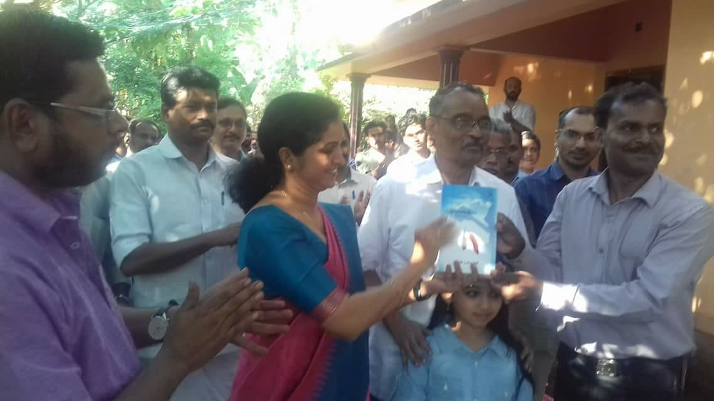
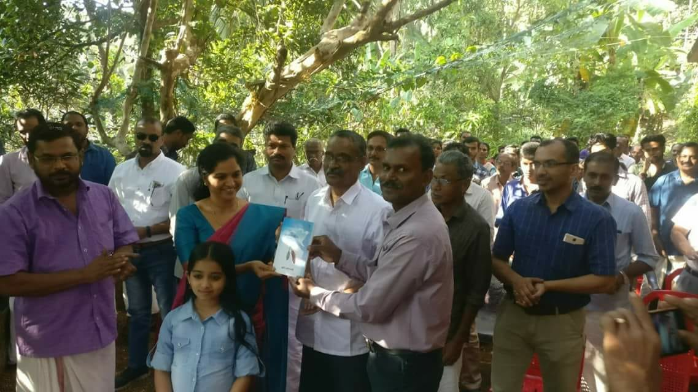
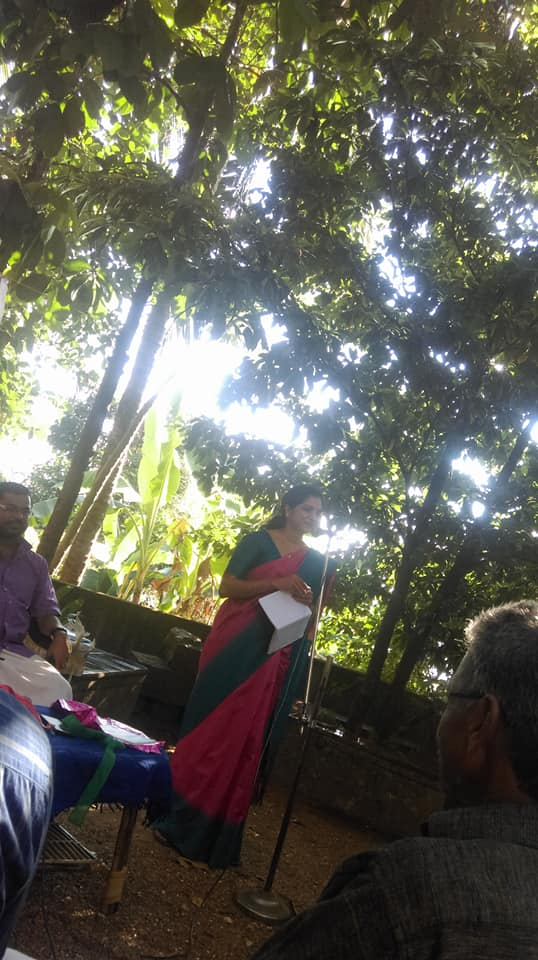
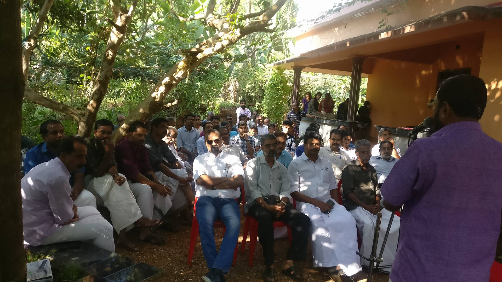
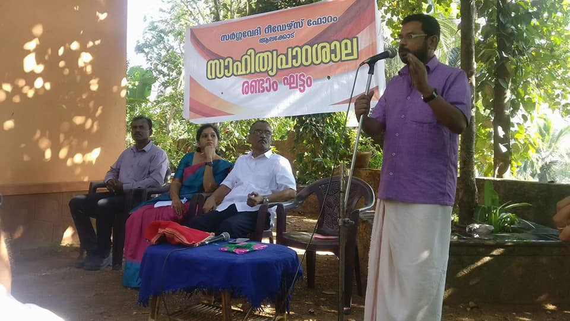
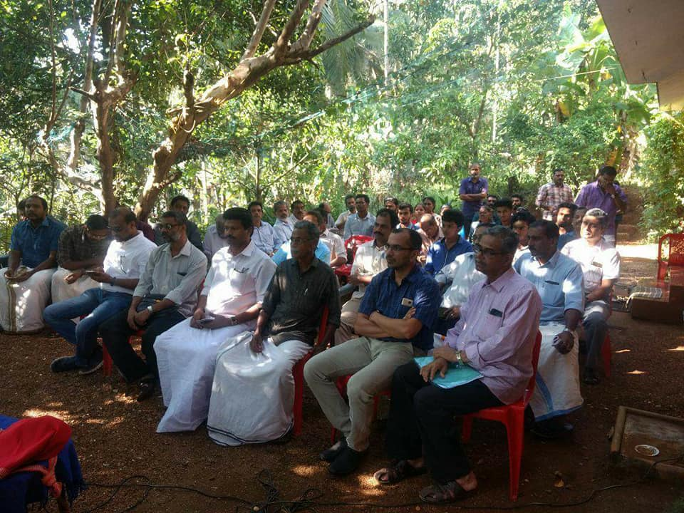
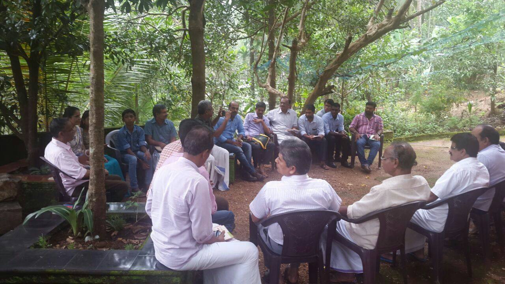
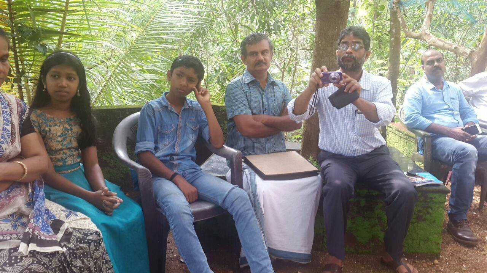
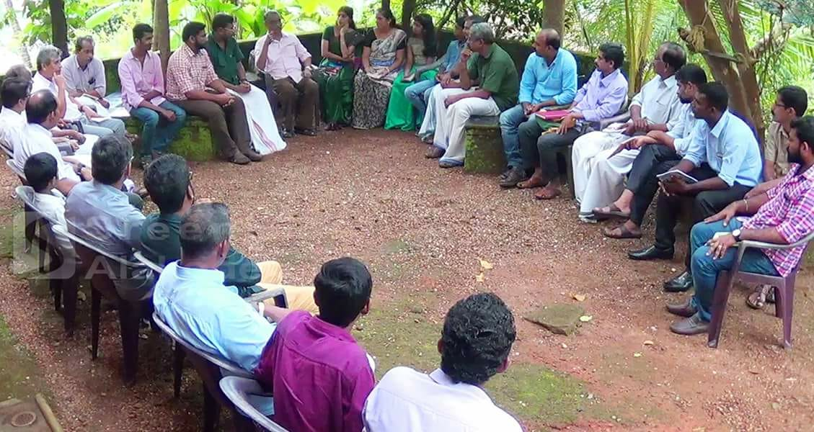
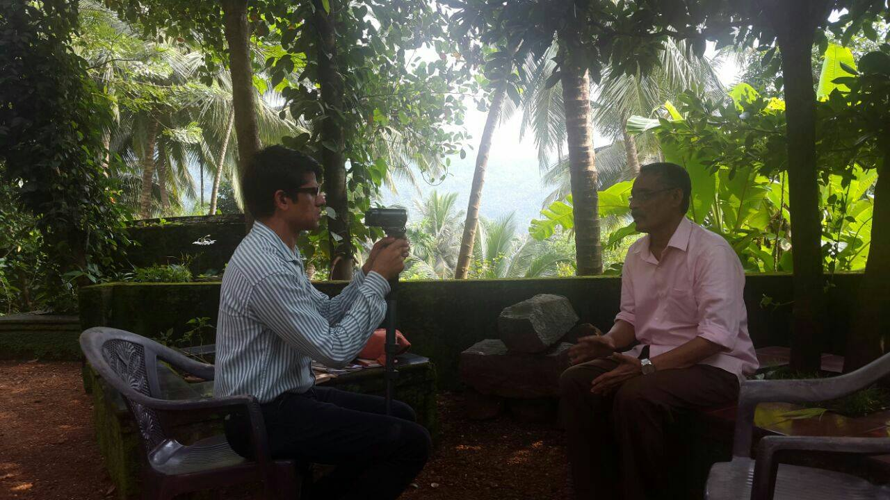
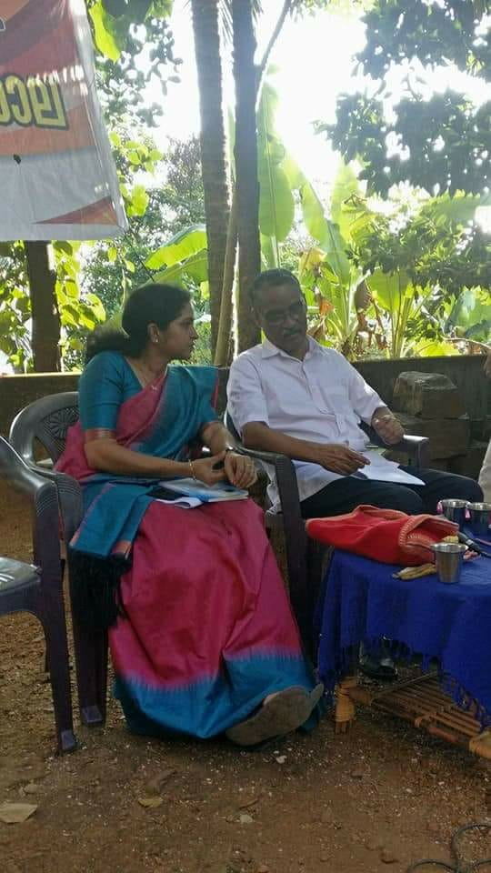
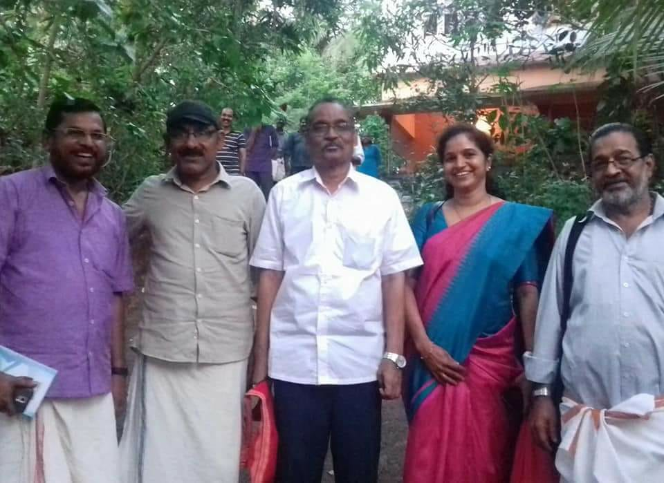
പ്രഭാമയമായൊരു ആലക്കോടൻ സായാഹ്നം.
ആലക്കോടിന്റെ അന്തരീക്ഷത്തിലേക്ക് നാടുകളുടെ അതിരുകൾ മായ്ചു കളഞ്ഞ് ഒരു പുതിയ സാംസ്കാരികാന്തരീക്ഷം രൂപപ്പെടുത്തിയെടുക്കുന്ന സർഗ്ഗവേദിയും റീഡേർസ് ഫോറവും എൻ.പ്രഭാകരൻ മാഷ് നയിച്ച സാഹിത്യപാഠശാലയുടെ ഒന്നാം ഘട്ടം പൂർത്തിയാക്കി, രണ്ടാം ഘട്ടം മാഷിന്റെ 'എഴുത്തിന്റെ സ്വദേശം' എന്ന പുതിയ പുസ്തകത്തിന്റെ പ്രകാശനത്തോടെ തുടക്കം കുറിച്ചിരിക്കുന്നു. അവധി ദിവസങ്ങളെ സാർത്ഥകമായ പൂരണങ്ങളാൽ സജീവമാക്കുന്ന ആലക്കോട്ടുകാർ ചെന്നു കേറുന്നവരെയും വീട്ടുകാരാക്കിക്കളയും എന്ന് ഞാനും സാക്ഷ്യം പറയുകയാണ്.
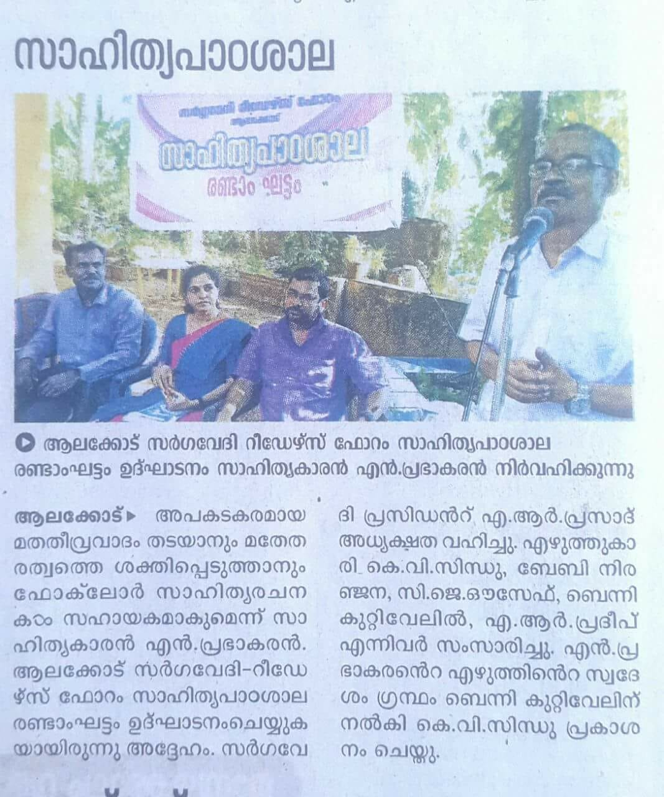
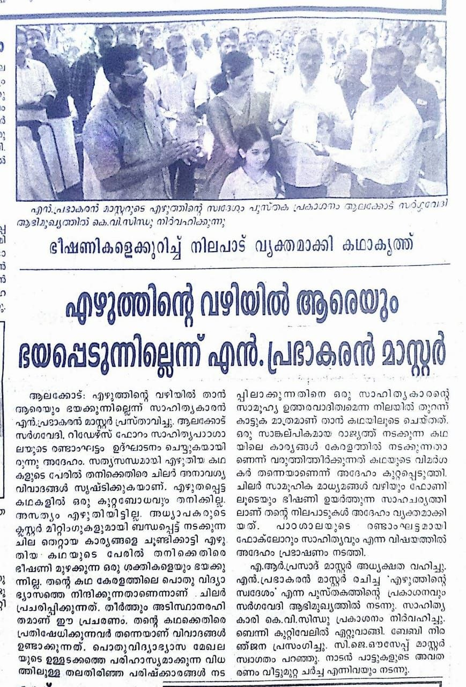